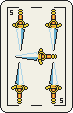
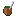
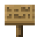

El Truco de verdad, adentro de Minecraft. 1v1 y 2v2 con señas: Envido, Flor, Truco y Vale Cuatro — y sí, podés mentir los tantos. Contra otros jugadores, o contra el Carpincho, que no perdona.
MINECRAFT 26.2
FABRIC
JAVA 25
MIT
El Truco de verdad, adentro de Minecraft. 1v1 y 2v2 con señas: Envido, Flor, Truco y Vale Cuatro — y sí, podés mentir los tantos. Contra otros jugadores, o contra el Carpincho, que no perdona.
Motor de reglas en Java puro con más de 340 tests. Si el mod te cobra mal un envido, andá pensando en pedir disculpas.

Envido, Real Envido, Falta Envido, Flor, Contraflor y al resto, Truco / Retruco / Vale Cuatro, pardas, "el envido está primero" e irse al mazo. A 15 o 30 puntos, con o sin flor.

Truco por equipos en la Mesa Grande (2×2): el lado donde te sentás define tu equipo. Señas clásicas a tu compañero por canal privado — y como en la mesa real, se pueden pescar: al rival atento le asoma un instante la seña ajena. El Carpincho las hace, las entiende… y te las caza.

Al quererse el envido declarás tu tanto de palabra, salvo mostrada. Al final de la mano el rival decide: "Te creo" o "¡No te creo!" — y el mentiroso pescado paga castigo. Funciona en 1v1 y en 2v2.

Un bloque de mesa con paño verde: click derecho y te sentás. Las cartas jugadas se ven sobre la mesa, en el mundo. Se craftea con lana verde y tablones.

Baraja española real de 40, botones solo con los cantos legales, anotador de fósforos, relato de la mano y cámara cinematográfica. En español (AR y ES) e inglés.

El servidor es la única autoridad: las cartas del rival nunca viajan a tu cliente hasta que se juegan. Ni con hacks, ni mirando paquetes.

¿Hay partida en la mesa? Click derecho y mirala en vivo. La información oculta se filtra en el servidor — el mirón tampoco puede espiar.

Tab de logros propio (partida perfecta, mostrar 33, ganarle al picante…), Revancha al terminar (30 s para la del gallinero) y un fin de partida vistoso con las manos finales y el resumen (envidos, mentiras pescadas).

Escala de mesa y cartas, opacidad del paño, cámara — todo desde la GUI. En el server: /truco puntos 15|30, /truco flor con|sin y /truco mentir con|sin.

Frases reactivas, gruñidos con palabra ("envido", "truco", "flor"), la ronda del mate que pasa de mano en mano por la mesa, fanfarria al ganar, emotes de partículas y estadísticas con /truco stats.
Esta es la baraja española real del mod, las mismas 40 cartas que ves en la mesa. Repartite tres y fijate qué tenés para el envido — si te tocan tres del mismo palo, cantá flor. O mentila, total acá no hay mostrada.
¿No hay nadie conectado? El mod incluye al Carpincho: un carpincho cebador de mate que se sienta enfrente tuyo, te mira, gruñe cuando canta y juega al Truco en serio. Elegí cuánto querés sufrir:
El nivel se le nota en la pinta, sin carteles: el tranqui mastica una brizna de pasto, el canchero lleva pañuelo de gaucho al cuello y el picante se planta con poncho y rebenque.
Y con la variante mentirosa activada, el Carpincho miente y desconfía según el nivel: el fácil jamás infla un tanto, el picante te mete flores falsas — y si te pesca mintiendo una vez, te toma de punto: cada mentira descubierta le sube la desconfianza por el resto de la partida.

GANALE Y TE PAGA
EN MATES

INVOCALO CON
/TRUCO BOT PICANTE
Generados en ríos y sabanas: una mesa, un farol y un carpincho salvaje con nivel de por vida. Sentate y la partida arranca sola. Paga 1, 2 o 3 mates según el nivel.
Un cobertizo con la Mesa Grande y tres carpinchos: sentate en el lado libre y se arma el 2v2 al toque — vos con un carpincho de compañero, contra los otros dos.

El hub del truco, muy raro de encontrar: un boliche con cartel, dos mesas chicas, una Mesa Grande y cinco carpinchos de todos los niveles. Fichas van, fichas vienen.
Deambula por sabanas y ríos buscando dónde jugar. Ponele una mesa cerca y la adopta: camina hasta ella, se instala y espera rival.
Ganale a un salvaje y cebale mates hasta que se haga tu amigo: te sigue, es tu rival portátil en cualquier mesa y tu compañero de 2v2 (el más señero de todos). Con /truco mascota lo llamás desde donde sea o lo mandás a dormir.
Se craftea con lana verde y tablones (también está en el creativo). Para el 2v2, armá la Mesa Grande de 2×2.
Apoyala y hacé click derecho: quedás sentado con el cartel "X quiere jugar al Truco — 1/2" esperando rival. En la Mesa Grande, el lado que elegís es tu equipo.
Click derecho en la misma mesa, acepta la invitación y se abre la GUI: click en una carta para jugarla, botones para cantar (y señas al compañero en 2v2).
Tranquilo: click derecho en la mesa y volvés a la partida como si nada.
Todo también se puede hacer por comando, sin mesa de por medio.
/truco desafiar <jugador>Desafía a otro jugador sin necesidad de mesa./truco 2v2 <compañero> <rival1> <rival2>Arma un 2v2 por comando — o sentate en una Mesa de Truco Grande, que el lado elige el equipo./truco aceptar · rechazarResponde un desafío 1v1 o una invitación 2v2./truco mesaReabre la mesa de tu partida en curso./truco abandonarTe vas al mazo… de la partida entera./truco revanchaPide la revancha en los 30 segundos después de una partida (o el botón de la GUI)./truco ultima [página]El relato completo de tu última partida, paginado de a 12 líneas./truco bot facil|normal|picanteInvoca al Carpincho para jugar contra la máquina (sentado en una mesa)./truco mascotaAbre la pantalla de tus carpinchos mascota: llamalos desde donde estén o mandalos a dormir./truco statsTu récord contra Carpincho (total y por nivel) y tus mentiras coladas, pescadas y mostradas ganadas./truco puntos 15|30Puntaje objetivo del servidor, default 15 (solo operadores)./truco flor con|sinSe juega con o sin flor (solo operadores)./truco mentir con|sinTantos declarados de palabra (default) o cantados automáticos (solo operadores).truco-x.y.z+26.2.jar; hay build para 1.21.1 también) y Fabric API si no lo tenés.mods/ de tu instancia y de tu servidor.